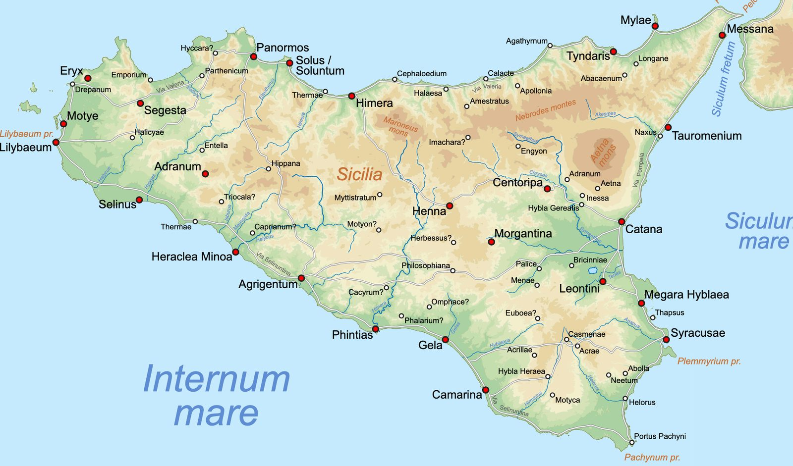

Unit 6 · Slavery in ancient Rome · Lesson 12
Resisting slavery and the Sicilian slave wars
How did enslaved people resist, from hidden ways to open revolt, and what can a Greek writer’s summary of a lost book tell us about why a war began?
Year 11 Ancient History · Present with → or space · Read on a phone with R

Connect · 3 minutes · books closed · everyone writes
One way a freed person presented a new status, with evidence
Name one way a freed person presented their new status, and give one piece of evidence from Lesson 11’s Roman reliefs. Say who tells us.
Frame: “A freed person … by … . The evidence is … , and it comes from …”
Today moves from freedom to resistance. Keep asking: who is speaking, when, and from whose sources?
Learning intentions and success criteria · 2 minutes
Today’s goals
- analyse everyday resistance and the causes of the Sicilian slave wars
- propose causes with modality matched to the evidence
- describe three forms of everyday resistance, with evidence
- explain Diodorus’s causes of the First Sicilian war and the problems with his account
- propose causes in hedged, ranked sentences
Syllabus outcomes: AH-11-02 proposes ideas about the varying causes and effects of events and developments · AH-11-05 analyses different types of sources for evidence to support a historical account or argument · AH-11-07 communicates historical understanding, applying historical knowledge, terms and concepts. Life Skills: AH-LS-04 recognises causes and effects of events or developments · AH-LS-11 communicates information about the past using historical terms and concepts.
Note-making · the routine for the whole course
How to structure your notes
questions and key terms, written after
short phrases, arrows (→ leads to), abbreviations (c. = about; ↔ = compared with)
- 1A new pageA cue column about a quarter of the page wide; title and date at the top; room for a summary at the bottom.
- 2Listen and look, then writePhrases, not sentences. Today, for every source: who wrote it, when, and from whose sources.
- 3Write your own notes at the ✎ checkpointThen compare with the model notes, one row at a time. Add what you missed in a second colour.
- 4Write the cue questions afterwardsUse exam verbs: describe, explain, account for. To revise, cover your notes and answer the cues.
- 5Finish with a three-sentence summaryOne checkpoint today, after the map and Diodorus. The evidence cards in your booklet are your notes for the rest.
Key vocabulary · add to the unit word wall
Words for resistance, sources and proposals
| From the unit list | Meaning |
|---|---|
| Propose (NESA) | NESA, Glossary of key words: ‘Put forward (for example a point of view, idea, argument, suggestion) for consideration or action.’ Department advice: put forward causes, ranked and hedged. |
| Hedge | A word that matches certainty to the evidence: perhaps, probably, on one estimate. |
| Slave wars (servile wars) | The three large revolts of enslaved people: two in Sicily (ended 132 BCE; 104 to about 100 BCE) and Spartacus’s in Italy (73–71 BCE). |
| Added today | Meaning |
|---|---|
| Everyday resistance | Ways of resisting slavery that did not need open revolt: working badly on purpose, running away and, more rarely, violence. |
| Round figure | A number given in round thousands, such as ‘two hundred thousand’. It may be an estimate, a boast or a guess, not a count. |
| Summary (of a lost book) | A later writer’s short account or copied passages of a book that no longer survives. Diodorus’s books on the slave wars survive only this way. |
| Anachronism | Something placed in the wrong time, such as describing a later arrangement as if it already existed. |
1 · Everyday resistance · I do — think aloud · a spectrum, our own way of sorting · 2 minutes
Resistance, from hidden to open
← hiddenopen →
- 1 · Petty sabotageWorking badly on purpose or wasting an owner’s goods. No Roman source on our list shows a case. Bradley (1989, p. 33) says the evidence in modern slave societies is “sufficiently extensive” to show it was “a form of resistance to oppression”.
- 2 · FlightOwners expected it. Cato lists “slaves have run away” among an overseer’s excuses (2.2); the market edict has the seller declare “a runaway or a vagabond” (Gellius 4.2.1). Bradley (p. 38): “a direct form of resistance”.
- 3 · Violence against an ownerRarer in our sources. Pliny 3.14 (Lesson 8) tells of an attack on Larcius Macedo; the reason Pliny gives, “malice”, is his word, not theirs.
- 4 · Open revoltThe slave wars: two in Sicily (ended 132 BCE; 104 to about 100 BCE) and, next lesson, Spartacus (73–71 BCE).
Choose one stop. Whose account is it, written when, from whose sources?
For flight: Cato wrote a handbook for owners about 160 BCE, and the excuse is the overseer’s as an owner reports it; Gellius, writing in the later 2nd century CE, quotes the market officials’ edict. Both are the words of owners and officials, so we learn what they expected, not how many ran or why. Nothing is in the words of the people who ran.
1 · Everyday resistance · I do — think aloud · two Roman texts on flight · 1½ minutes
What do two texts say about people running away?
If the amount of work does not seem satisfactory, the overseer claims that he has done his best, but that the slaves have not been well, the weather has been bad, slaves have run away, he has had public work to do; when he has given these and many other excuses, call the overseer back to your estimate of the work done and the hands employed.
Cato, De Agri Cultura 2.2, about 160 BCE, a handbook of advice to an owner · trans. W. D. Hooper and H. B. Ash (Loeb, 1934)
See to it that the sale ticket of each slave be so written that it can be known exactly what disease or defect each one has, which one is a runaway or a vagabond, or is still under condemnation for some offence.
The edict of the curule aediles (the officials who supervised markets), as Aulus Gellius quotes it in Attic Nights 4.2.1, later 2nd century CE · trans. J. C. Rolfe (Loeb, 1927, rev. 1946)
What does each text show about flight, and what can neither show?
Cato shows that an owner expected an overseer to name runaways among his excuses; the edict shows that a seller had to say if a person was “a runaway or a vagabond”. Neither says how many people ran, why, where to, or what happened to them, and neither is in the words of the people who ran.
1 · The First Sicilian war · I do — where, and when? · 1½ minutes
Enna and Tauromenium: where the war began and where Rome struck
- 1Enna (Henna on the map)Diodorus places the revolt’s beginning here (34/35.2.10), among the people enslaved by Damophilus and by Antigenes.
- 2TauromeniumRupilius, the Roman commander, besieges it and takes it when its citadel is betrayed (2.20–21), then takes Enna “also by betrayal” (2.21). Rupilius was consul in 132 BCE (Walton’s note).
- 3The end: 132 BCEBradley (1989, p. 59): “it is certain that the war … came to an end in 132 B.C.”, after “five years or so”.
- 4The start: unknownBradley: “the very year in which the revolt at Enna took place is unknown”, with every year from 141 to 135 BCE “a possibility”.
Which dates can we be sure of, and which can’t we?
The end, 132 BCE, is certain on Bradley’s account. The start is not: any year from 141 to 135 BCE is possible, because Diodorus’s account lacks dates. So “five years or so” is Bradley’s estimate, not a record.
1 · The First Sicilian war · I do — think aloud · the course of the war, in a summary · 2 minutes
Eunus “chosen king”, “two hundred thousand” and revolts elsewhere
Thereupon Eunus was chosen king, not for his manly courage or his ability as a military leader, but solely for his marvels and his setting of the revolt in motion …
Before long their band reached a total of two hundred thousand, and in numerous battles with the Romans they acquitted themselves well, and failed but seldom. As word of this was bruited about, a revolt of one hundred and fifty slaves, banded together, flared up in Rome, of more than a thousand in Attica, and of yet others in Delos and many other places.
Diodorus of Sicily, Library of History 34/35.2.14 and 2.18–19, written about 60–30 BCE; the books survive only in summaries, here Photius’s (9th century CE) · trans. F. R. Walton (Loeb vol. XII, 1967)
- 1The rebels’ kingEunus, a Syrian enslaved at Enna, is “chosen king”. Diodorus gives his reasons, not the rebels’.
- 2A round number“two hundred thousand” comes after “Before long”, with no date and no count.
- 3Revolts elsewhereAt Rome, in Attica and on Delos, the magistrates “at once disposed of the rebels”.
How sure can we be of “two hundred thousand”?
Not very. It is a round figure in a summary of a lost book. Bradley (1989, p. 64) calls it “the highest figure given by Diodorus”, far above the 70,000 and 60,000 other sources give, and a rebellion of that size “very unlikely”, though “tens of thousands” seems “relatively safe”.
Notes checkpoint · I do · 1 minute · cue: what do the sources say, and how sure are we?
What do the spectrum, the map and Diodorus show?
2 · Diodorus · We do — supported reading (1 of 3) · 4 minutes · underline who acts, circle what is done to the enslaved, box what happens next
Diodorus on how the war began: 34/35.2.1–4
The Sicilians, having shot up in prosperity and acquired great wealth, began to purchase a vast number of slaves, to whose bodies, as they were brought in droves from the slave markets, they at once applied marks and brands. … But they treated them with a heavy hand in their service, and granted them the most meagre care, the bare minimum for food and clothing. As a result most of them made their livelihood by brigandage, and there was bloodshed everywhere, since the brigands were like scattered bands of soldiers.
The governors (praetores) attempted to repress them, but since they did not dare to punish them because of the power and prestige of the gentry who owned the brigands, they were forced to connive at the pillaging of the province. … The slaves, distressed by their hardships, and frequently outraged and beaten beyond all reason, could not endure their treatment. Getting together as opportunity offered, they discussed the possibility of revolt, until at last they put their plans into action.
Diodorus of Sicily, Library of History 34/35.2.1–4, written about 60–30 BCE; in Photius’s summary (9th century CE) · trans. F. R. Walton (Loeb vol. XII, 1967)
Fill in the table in your booklet: who does Diodorus say acts in each part, and what do they do?
| Who acts | What Diodorus says they do |
|---|---|
| The Sicilian owners | Buy “a vast number of slaves”, brand them, work them hard and give “the bare minimum for food and clothing”. |
| The enslaved, as brigands | Most of them “made their livelihood by brigandage”. |
| The governors | Attempt to repress the brigands, but “did not dare to punish them”. |
| The enslaved, as a group | Are “distressed by their hardships”, discuss the possibility of revolt and then act. |
Diodorus does not quote any of the enslaved people: their feelings and their talk are his report.
2 · Diodorus · We do — supported reading (2 of 3) · 2 minutes · find the editor’s warning, then follow the chain from the war to us
Whose account, written when, from whose sources?
Actually, equestrian control of the courts could not have existed before the Gracchan Lex iudiciaria of 122 B.C. The anachronism may derive from the bias of Poseidonius but perhaps goes back to his Roman sources.
F. R. Walton, note to Diodorus 34/35.2.3 (the sentence that the Roman knights judged the governors, so “the magistrates stood in awe of them”), Loeb vol. XII (1967), p. 57
Scholars agree that the source Diodorus followed for the slave wars was Posidonius of Apamea …
… his account in turn relied on sources no longer available and not even positively identifiable.
… the relevant Diodoran books survive today only in excerpted form …
K. R. Bradley, Slavery and Rebellion in the Roman World, 140 B.C.–70 B.C. (Indiana University Press, 1989), Appendix I, pp. 133–134
- 1The war: began 141–135 BCE, ended 132 BCEThe start year is unknown (Bradley); Rupilius ends it in 132 BCE.
- 2Posidonius: about 135–51 BCEBradley’s “probable dates”; his history is lost.
- 3Diodorus: wrote about 60–30 BCESome 70 to 100 years after the war, following Posidonius.
- 4Photius: 9th century CEHis summary is how this book survives.
- 5Walton: 1967The translation we read, with the editor’s note.
What does the editor warn us about, and how many hands lie between the war and us?
That Diodorus’s sentence about the knights as judges is an anachronism, which “may derive from the bias of Poseidonius” but “perhaps goes back to his Roman sources”. At least four hands lie between the war and us: Posidonius, Diodorus, Photius and the translator. No enslaved person’s account survives.
2 · Diodorus · We do — evidence cards (3 of 3) · 4 minutes · for each card: “This line says … and leaves out …”
Four things Diodorus describes, line by line
The Sicilians, having shot up in prosperity and acquired great wealth, began to purchase a vast number of slaves …
Diodorus 34/35.2.1
… granted them the most meagre care, the bare minimum for food and clothing.
… distressed by their hardships, and frequently outraged and beaten beyond all reason …
Diodorus 34/35.2.2 and 2.4
Going to Eunus they asked him whether their resolve had the favour of the gods.
Diodorus 34/35.2.10
… they did not dare to punish them because of the power and prestige of the gentry who owned the brigands …
Diodorus 34/35.2.3
For each card, write one sentence: “This line says … and leaves out …”. Then check yours.
| Card | What the line says, and what it leaves out |
|---|---|
| 1 | Newly rich owners bought many enslaved people. It leaves out how many (“a vast number” is no count) and which owners. |
| 2 | Harsh treatment, and the enslaved people’s distress. It leaves out their own words: Diodorus reports feelings, and quotes no one. |
| 3 | People who had resolved to revolt asked Eunus whether the gods favoured it; Diodorus calls his reply “his usual mummery”. It leaves out whether the plan began with him. |
| 4 | Governors did not dare to punish the brigands, because of the owners’ power. It is about the brigandage before the revolt, and Walton’s note says the explanation Diodorus adds next (the knights as judges) is an anachronism. |
Nothing here ranks the cards. Whether any of them helped start the war, and how far, is for your own answer.
3 · You do · Writing focus · 7 minutes · I do → We do → apply
Writing focus: propose a cause, support it, say what would test it
NESA, Glossary of key words: propose is ‘Put forward (for example a point of view, idea, argument, suggestion) for consideration or action.’ Moves: claim → support → limit; rank the causes; match each hedge to the evidence.
Written for this lesson · a different event (Pedanius, Lesson 8)
Question: Propose reasons for the murder of Pedanius Secundus in 61 CE.
One possible cause was a broken bargain, since Tacitus says the murderer had been “refused his freedom, for which he had made a bargain”; a second, less certain cause was jealousy, “the jealousy of a love in which he could not brook his master’s rivalry”. Tacitus offers the two only as alternatives (“either … or”) and does not rank them, so I put the bargain first only because he names it first and gives it a concrete detail, a bargain for freedom; that ranking is my own proposal, and a source from the enslaved household itself would test it.
Claim: ‘possible’, not ‘likely’
Rank, with a reason: ‘less certain’; named first, with a detail
Limit: Tacitus does not rank them, so the order is mine
Limit: what would test it
Pliny 3.14: one student proposes a cause of the attack on Larcius Macedo aloud. Then vote: which hedge best matches the evidence?
… there was a haughtiness and severity in his treatment of them …
… it is malice, and not reflection that arms such ruffians against their masters.
Pliny, Letters 3.14 · trans. Melmoth, rev. Hutchinson
- AMacedo’s severity certainly caused the attack, since Pliny admits it.
- BMacedo’s severity may have been one cause, since Pliny admits it.
- CMacedo’s severity may possibly perhaps be a cause, since Pliny admits it.
- DMacedo’s severity was not a cause, since Pliny blames “malice”.
Pliny admits severity but names malice, so “may have been one cause” fits. A overclaims. C stacks hedges. D overclaims the other way: “malice” is an owner’s word, not proof.
Write your first sentence now: a cause, a hedge and its support.
One [hedge] cause was …, since …
Your Writing toolkit (booklet pages 3–4): the modality scale.
3 · You do · 21 minutes · check the deconstruction 2 · write 19
Propose reasons for the outbreak of the First Sicilian slave war.
What does this question ask you to do? Check your deconstruction.
- Verb
- propose: NESA, Glossary of key words: ‘Put forward (for example a point of view, idea, argument, suggestion) for consideration or action.’ Department advice: put forward an idea or explanation, support it, and say what would test it
- Topic
- the reasons the First Sicilian slave war broke out (reasons means causes), not how it was fought or how it ended
- Limits
- the First Sicilian war only, not the second war and not Spartacus; the evidence on your four cards and in Diodorus 34/35.2; ‘outbreak’ means the start
- Do
- two causes, each as claim → support from Diodorus → limit (what would test it); ranked, with hedges matched to the evidence; evaluate Diodorus as you go: who wrote it, when, from whose sources
Write straight away. Your four evidence cards, your notes and the extracts in your booklet are open. Mark the cards in a second colour as you use them.
- First sentence (the apply): your first cause, with a hedge and its support.
- Each cause: a claim with a hedge matched to the evidence, support from Diodorus (section number, a short quotation or a close paraphrase) and a limit: what would test it.
- Rank: say which cause you put first and why, and keep each hedge honest. Evaluate Diodorus as you go.
Frame for the target sentence only: “One [hedge] cause was …, since …; a second, less certain cause was …, since …” Modality bank: may · might · possibly (low) · probably · is likely to · suggests (medium) · shows · demonstrates (high). Your four evidence cards. Your Writing toolkit (booklet pages 3–4): the modality scale.
Diodorus’s editor notes an anachronism that “may derive from the bias of Poseidonius”. Evaluate how Diodorus’s reliance on an earlier writer affects his reliability on causes.
Check · hinge · 4 minutes · on the murder of Pedanius Secundus
Which claim is best matched to the evidence?
Soon afterwards one of his own slaves murdered the city-prefect, Pedanius Secundus, either because he had been refused his freedom, for which he had made a bargain, or in the jealousy of a love in which he could not brook his master’s rivalry.
Tacitus, Annals 14.42, early 2nd century CE · trans. A. J. Church and W. J. Brodribb (1876)
Vote on “3, 2, 1, show”: A, B, C or D.
- AOn Tacitus’s account, a broken bargain was certainly the cause.
- BOn Tacitus’s account, a broken bargain was one possible cause.
- COn Tacitus’s account, jealousy was proved to be the cause.
- DOn Tacitus’s account, a broken bargain may possibly perhaps be a cause.
Tacitus offers the bargain and the jealousy as alternatives (“either … or”) and does not choose, so “one possible cause” fits. A overclaims: “certainly” ignores the alternative. C overclaims the other way: nothing is “proved”. D stacks hedges (“may possibly perhaps”), so it says almost nothing.
Exit ticket · 4 minutes · before you leave
Your strongest proposed cause
Finish the sentence: “The cause I proposed that I can support best was …, which I held with the hedge … because …”
A cause in your own words, not only a heading from a card. A hedge from the modality scale that matches the evidence you used, and a reason for it (for example how many writers or hands lie behind it), not “proves” for one writer’s summary. A reference to what Diodorus says (a section number or a short quotation). One thing that would test your claim. A strong answer is specific about the evidence; it does not need to match anyone else’s cause.
Then check yourself against today’s three “I can” statements. Next lesson: Lesson 13, Spartacus I: from Capua to the final battle, 73–71 BCE.
Finish your notes If time · or at home
Summary: three sentences
- What are three forms of everyday resistance, and what does one source say about one of them?
- What is certain and what is uncertain about the First Sicilian war’s dates, and why is “two hundred thousand” a round figure?
- What are the three moves of a proposed cause, and what does a hedge do?
Enslaved people probably resisted in hidden ways such as petty sabotage, which Bradley expects from modern slave societies, and by flight, which Cato’s handbook lists among an overseer’s excuses; in our sources violence is rarer, as in Pliny’s letter on Larcius Macedo, and open revolt came in the slave wars. The First Sicilian war certainly ended in 132 BCE, but its start is unknown, any year from 141 to 135 BCE being possible, and Diodorus’s “two hundred thousand” is a round figure in a summary of a lost book, which Bradley thinks very unlikely. A proposed cause has three moves, a claim, its support and a limit that says what would test it, and a hedge matches how sure the evidence lets us be.
Practice and review · 1 of 4 · true, false, justify
True or false? Justify your answer
- 1In Cato 2.2, Cato reports that enslaved people ran away from his own farm. False — “slaves have run away” is one of the excuses Cato says an overseer gives; it shows what an owner expected, not a case of flight.
- 2Historians know the year the First Sicilian war began. False — Bradley says the year is unknown, with every year from 141 to 135 BCE a possibility; the end, in 132 BCE, is certain.
- 3“Two hundred thousand” is a reliable count of the rebels. False — it is a round figure, preserved in Photius’s summary of Diodorus’s lost book, and Bradley calls a rebellion of that size “very unlikely”.
- 4Walton says the mistake about the Roman knights as judges is certainly Posidonius’s bias. False — he says it “may derive from the bias of Poseidonius” but “perhaps goes back to his Roman sources”: two hedges.
- 5Diodorus says the rebels at Enna chose Eunus as their king. True — “Eunus was chosen king”; Diodorus also gives his own view of why, which is the writer’s reading, not the rebels’.
- 6In claim → support → limit, the limit says what would test the claim. True — for example the kind of evidence that would settle it, or what the source cannot show.
Practice and review · 2 of 4 · hedges
Fix one hedge, write one proposal
A student writes: “Tacitus proves that Pedanius’s murderer acted out of jealousy.” Tacitus 14.42 gives the motive as “either … or”. Rewrite it so the hedge matches the evidence.
Tacitus offers jealousy as one possible motive, alongside a refused bargain for freedom, and does not choose between them.
Propose one cause of the attack on Larcius Macedo (Pliny 3.14, Lesson 8). Write it as claim → support → limit, with a hedge from the modality scale.
Practice and review · 3 of 4 · extension
How far does relying on an earlier writer matter?
Diodorus’s editor notes an anachronism that “may derive from the bias of Poseidonius”. Evaluate how Diodorus’s reliance on an earlier writer affects his reliability on causes.
The anachronism may derive from the bias of Poseidonius but perhaps goes back to his Roman sources.
… his account in turn relied on sources no longer available and not even positively identifiable.
F. R. Walton (Loeb vol. XII, 1967), p. 57; K. R. Bradley (1989), p. 134
It names a criterion (reliable for what? for the causes of the war) and weighs both sides: what a writer who follows an earlier one can still offer, against what may be lost or bent along the way (an earlier writer’s bias, his unknown sources, a later summary). It uses the editor’s two hedges rather than a flat claim, says what evidence is missing, and ends with a degree, not a yes or no.
Practice and review · 4 of 4 · cover your notes and answer from memory
Quick checks
- What do Cato 2.2 and the sale edict each tell us about flight, and what can’t they tell us? Cato lists “slaves have run away” among an overseer’s excuses; the edict has a seller declare “a runaway or a vagabond”. Both show what owners expected and officials required. Neither says how many ran, why, or what happened to them.
- When did the First Sicilian war end, and what is uncertain about its start? It ended in 132 BCE (certain, on Bradley’s account). The year of its start is unknown: any year from 141 to 135 BCE is a possibility.
- How sure can we be of “two hundred thousand”? Not very: it is a round figure in a summary of a lost book. Bradley calls it the highest figure given by Diodorus and a rebellion of that size very unlikely, though tens of thousands seems relatively safe.
- Why is Diodorus’s account not a first-hand record? He wrote about 60–30 BCE, perhaps 70 to 100 years after the war, following Posidonius, whose own sources are unknown; and his books survive only in summaries such as Photius’s.
- What are the three moves of a proposed cause, and what does the third do? Claim, support, limit. The limit says what would test the claim, or what the source cannot show.
- Give one low, one medium and one high modality word, and say when to use each. Low: may, might, possibly (for thin or one-sided evidence). Medium: probably, suggests (for good but not certain evidence). High: shows, demonstrates (only when the evidence is firm). One hedge per claim.
Sources and credits
Where everything comes from
Diodorus of Sicily, Library of History 34/35.2 and 36.10, with the editor’s notes: trans. F. R. Walton (Loeb Classical Library vol. XII, 1967; copyright, quoted briefly), read in the archive.org scan. Cato, De Agri Cultura 2.2: trans. W. D. Hooper and H. B. Ash (Loeb, 1934, public domain), LacusCurtius. Aulus Gellius, Attic Nights 4.2.1: trans. J. C. Rolfe (Loeb, 1927, rev. 1946, public domain), LacusCurtius. Pliny the Younger, Letters 3.14: trans. W. Melmoth, revised by W. M. L. Hutchinson (Loeb, 1915, public domain), archive.org. Tacitus, Annals 14.42: trans. A. J. Church and W. J. Brodribb (1876, public domain), Perseus Digital Library (Perseus text CC BY-SA 3.0 US).
Modern historian, quoted briefly: K. R. Bradley, Slavery and Rebellion in the Roman World, 140 B.C.–70 B.C. (Indiana University Press, 1989), pp. 33, 38, 59, 64 and 133–134. The gallery labels of three British Museum reliefs (Lesson 11), as transcribed on Wikimedia Commons by Mike Peel (CC BY-SA 4.0). The NESA Glossary of key words (definitions quoted word for word) and NESA’s 2027 HSC student guide, p. 19 (step 3, “Reading time”).
Outcomes and content: NSW Education Standards Authority (NESA), Ancient History 11–12 Syllabus (2024). © NESA.
- Map of Sicily with ancient place names in Latin, including Henna (Enna) and Tauromenium · Map: Tomisti · CC BY-SA 4.0 · source

The map’s data, as its Commons page lists them: Digital Atlas of the Roman Empire (DARE) and Pleiades (cities and roads); OpenMapTiles and OpenStreetMap contributors (topographic map). The map was drawn by Tomisti as a vector file; it was rendered, cropped and resized for the web, small fragments of sea labels at its edges were painted out, and the two numbered pins are this lesson’s own. Shared under the licence shown.